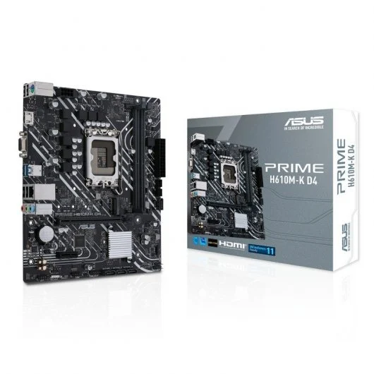
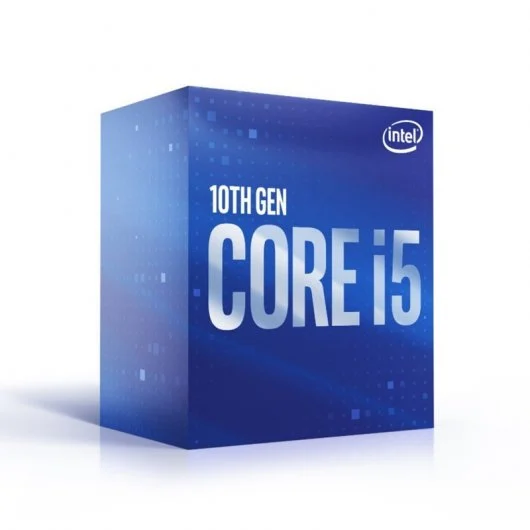
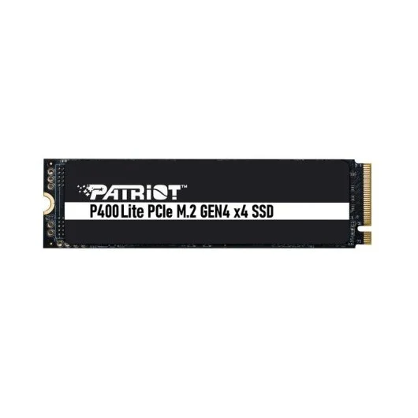
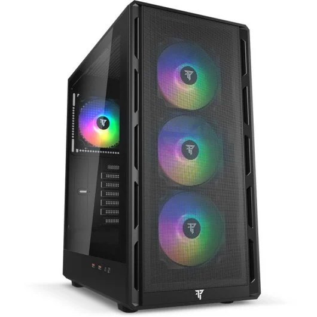
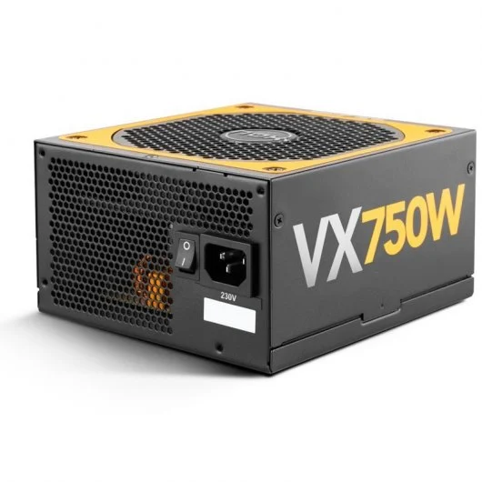
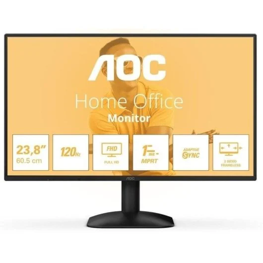

Placa base
La placa base es uno de los principales componentes de un ordenador. A ella se conectan todo el resto de componentes, dispositivos y periféricos, por lo que hay que escogerla con mucho cuidado, ya que el resto de componentes deberán ser compatibles con la placa.

Características
- Modelo: ASUS Prime H610M-K D4
- Memoria compatible: DDR4
- Almacenamiento: M.2 y SATA
- Formato: Micro-ATX
Fuente
Precio: 68,95 €: Placa base en PcComponentes
Procesador
El procesador es el cerebro del ordenador: ejecuta las instrucciones de los programas y coordina el resto de componentes.

Características
- Marca: Intel
- Modelo: Core i5-10400F
- Refrigeración: disipador Intel incluido
Fuente
Precio: 300,01 €: Procesador en PcComponentes
Memoria RAM
La memoria RAM almacena temporalmente los datos y programas que se están usando, y determina la fluidez al trabajar con varias aplicaciones a la vez.

Características
- Capacidad: 16 GB
- Tipo: DDR4
- Frecuencia: 3200 MHz
Fuente
Precio: 148 € Memoria RAM en PcComponentes
Almacenamiento
El disco guarda de forma permanente el sistema operativo, los programas y los archivos del usuario.

Características
- Tipo: SSD NVMe PCIe 4.0
- Capacidad: 500 GB
- Formato: M.2
Fuente
Precio: 186 € Disco duro en PcComponentes
Torre (caja)
La caja aloja y protege todos los componentes, y permite que estén bien ventilados.

Características
- Tipo: caja gaming ATX
- 4 ventiladores incluidos
- Panel lateral de malla
Fuente
Precio: 51,99 € Torre en PcComponentes
Fuente de alimentación
La fuente de alimentación transforma la corriente de la red y reparte la energía a todos los componentes.

Características
- Potencia: 550 W
- Certificación: 80+ Bronze
Fuente
Precio: 59,90 € Fuente de alimentación en PcComponentes
Monitor
El monitor muestra la información al usuario. Además se incluye un pack de teclado, ratón y auriculares gaming.

Características
- Tamaño: 24 pulgadas
- Resolución: Full HD
- Frecuencia: 120 Hz, panel IPS
- Pack: teclado, ratón y auriculares
Fuente
Precio: 76,99 € Monitor en PcComponentes